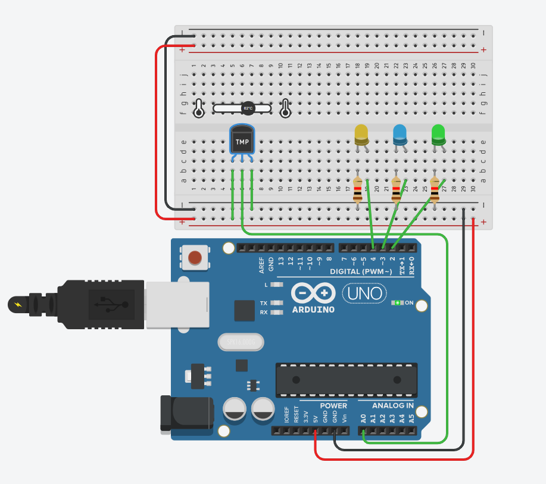

Vissza
13. Osztály - 1. Félév
Munakvállalói idegen nyelven - Önéletrajz készítése
Önreflexió
Önéletrajz készítésének elsajátítása a megfelelő elvárások szerint
Szakmai angol nyelvtudás fejlesztése

IOT - Hőmérő Tinkercadben
Önreflexió
Szenzorok és mikrovezérlők használatának elsajátítása
Gyakorlati IoT-projektek megvalósítása